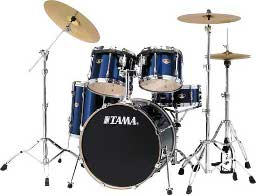

2012 年
02 月 19 日 ( 日 )
リチャード・クレイジーマンさんの新作！！
実はけいおんはアニメもまんがも見てないの。ファンの人達、ごめんね。でもお金がなくてテレビ持ってないし、まんがを買うお金もないので許してね。
ちなみに自分が使うことになるセットの最終構成はこんな感じ。

なんか足りなくね？と思った人正解です。これがオリジナルの状態。

某所の管理がアレでシンバル・スタンドを紛失しているのでクラッシュはなしに。Ride の方が重要かなと。しかしどうすればシンバル・スタンドみたいにでかいものを紛失できるんだろう。